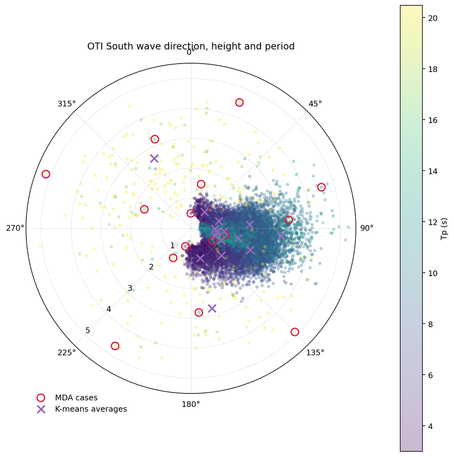
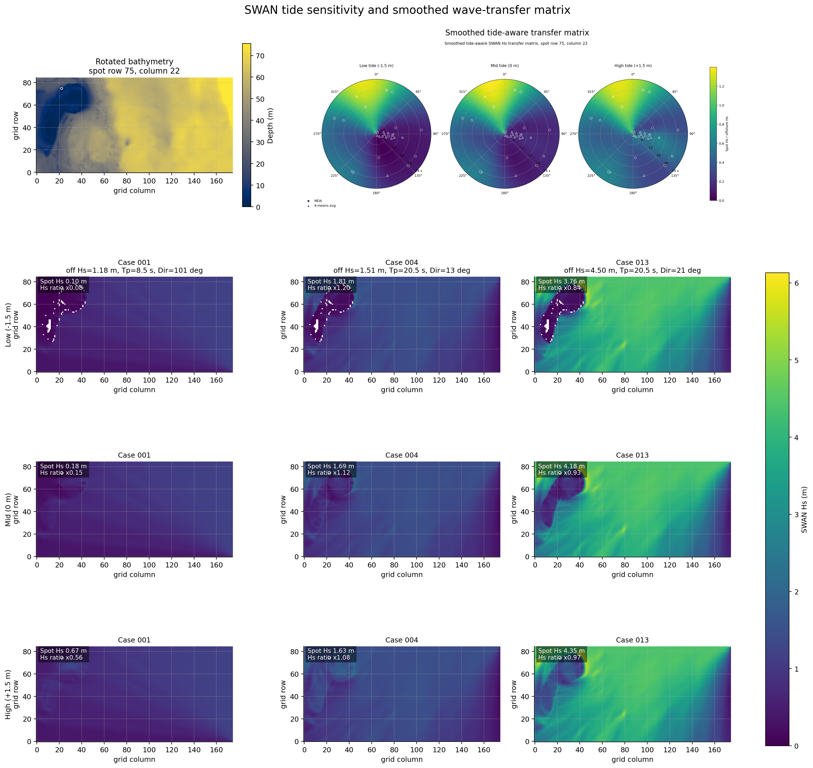
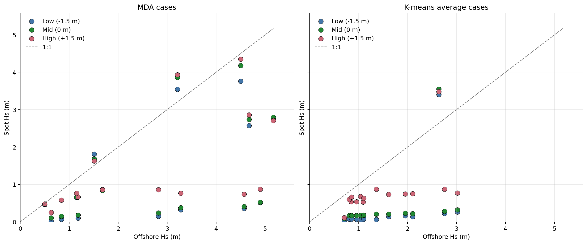

SWAN-Derived Wave Transfer Matrix
The GFS Wave forecast above is shown without modification. To estimate conditions at the surf spot, Sykemeter applies a SWAN-derived transfer matrix built from representative offshore wave cases near One Tree Island South.
Historic wave records were filtered for outliers and reduced to 15 representative sea states using a maximum-dissimilarity algorithm. The selected cases preserve spread in wave height, peak period and circular wave direction, with K-means average cases retained as an additional check on the wave climate. The MDA and K-means average cases were used as offshore forcing for SWAN over the rotated local bathymetry grid at low, mid and high tide by adjusting the model depth. At the surf spot, the transfer coefficient is calculated as spot Hs divided by offshore Hs. The sparse SWAN case outputs are smoothed across circular wave direction, log-scaled peak period and tide level using a regularized radial-basis interpolation surface. The current forecast matches each GFS forecast time to the predicted tide, then interpolates between the low-, mid- and high-tide 24 by 18 transfer matrices before calculating spot Hs.
Open the interactive SWAN model explorer
Contact Lachie Perris to suggest improvements


